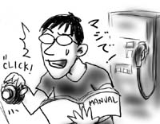
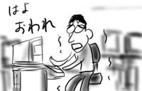

なんとか公道は普通に走れるようになった僕に，次なる試練がやってきました．給油です．
まず何が難しいかというと，ガソリンスタンド選びが難しい．どこで入れたらいいか検討がつきません．近場をぐるぐる回って，人がたくさん給油している新しそうなガソリンスタンドを探しまわります．
なんとかガソリンスタンドを選んで入っても，今度は自分の車の給油口がどっちか分からない．一か八か，確率は50%です(事前に調べておきましょう)．
そして給油機の前に駐車したはいいものの，次はどうやって給油口を開けたらいいかサッパリ．前面のコンソールを見渡してもそれらしいレバーは見当たりません．仕方なくマニュアルをめくります．座席の下かよ！こんなの分かんないよ！(八つ当たり)
なんとか給油口を開けて車を降りてみると，給油口の向きは合っていたのですが，どう見てもノズルが届かない感じです．後ろに停め過ぎた！結局，また車を動かして給油機の前まで移動します．この時点で相当恥ずかしい．
再度降りて，給油口の蓋を外そうとしたのですが…．ねじっても外れません．考えても考えても分からないので，車内からマニュアルを取り出します．隣のおばちゃんは笑ってます．人気のあるガソリンスタンドを選んだせいで，次から次へと車がやってくるし，かなり大変な感じに．そして蓋の外し方は，ねじって止まったと思ってもそこから無理矢理またねじるでした．そんなバカな！

さぁ注入です！と思ったんですけど，今度はクレジットカードを読み取ってくれません．よそ者だと思って！仕方なくとぼとぼとキャッシャーまで向かい，「このカードが給油機で使えない」と伝えると，係の人はそれを受け取ってレジに通しながら「何$入れたいんだ？」と聞いてます．こっちだと使えるのかよ！というかそんなこと聞かれても．
適当に$20と答えて車まで戻り，給油を開始します．$20じゃ全然足りなかったり，入り切らなかったりしたらどうしようと不安で不安で仕方なかったのですが，うまい具合に満タンちょっと前で終わりました．すげぇ自分！
というわけで，セルフ給油は「合格」ということにしたいと思います．依存はないですね？(どうかな)
こちらの人は週末になるに従って，明らかに機嫌がよくなってくるのでおもしろいですな．
毎日，RPG感覚で仕事をしています．
一つ仕事をこなす毎に，行ける部屋が増えたり，話せる人が増えたり，休憩室でダイエットペプシを買っていると今まで出て来なかったチームメンバとばったり会って月曜日にランチに誘われます．
…ごめんなさい．最後のはRPGじゃなかった…．
僕のカードキーはまだ「どうのカギ」なので，ドアを開けられる実験室と開けられない実験室があります．今回のイベントでは開けられない実験室で仕事をしないといけないのですが，どうするかと言うと，ドアをノックし続けると中からテストチームのコシロ(理由:古代祐三に似てるから)が開けてくれます．
というわけで，何かあって退室する度にコシロに開けてもらっていたのですが，実験はセットアップ中のトラブルや，ネットワークのトラブルなどで遅々として進みません．やがて時刻は定時を回ってしまいました．こちらの人達は仕事の見切りが早いので，キリのいいところでとっとと帰ってしまいます．
案の定，気が付くとコシロをはじめとする全ての人が実験室からいなくなっていました．…これが終わるまでトイレにも行けないってことですよね…．

こちらに来て初めての放置プレイです．
こちらの仕事部屋は，個室を二人でシェアする形になっています．
僕の前任で，こっちに5年間駐在していた先輩は，こちらでかなり活躍したらしく，同室のChrisもことあるごとに先輩を褒め称えています．「彼って本当にナイスガイよね，また戻って来ないかしら」ということを隙あらば言ってくるのです．
「お前は帰れ」という意味じゃないことを，心の底から祈っています．
今日，会社に行ってみると，いきなり新人が配属されていました．
インターンの学生さんとは言え，まさかやって来て一週間でニューカマーの座を奪われるとは思いもよりませんでした．日本にいたときは4年間新人だったのに…．
というわけで，昼はウェルカムランチということでチームメンバ全員で近所のイタリアンレストランまで出かけました．レストランに入って見渡すと，客が頬張っているピザはみんなバカでかく，とても食べ切れそうにありません．なんか最初に「ここのピザは小さいんだ」とか聞いてたんですけど．恐るべしアメリカ．
仕方ないのでブロッコリとトマトのパスタを注文．僕の皿が届くと，みんなが「ヘルシーメニューだね」と言ってきます．うん，野菜食べたいしね，ヘルシーだよね，そう見えるよね．実態は，ものすごいオイルがかかってるのでちっともヘルシーではありませんよ．そして，食っても食ってもなくならないパスタ…．
こんなのどうするんだ…やっぱりこっちの人の胃袋は違うのか，そう思ってメンバの皿を見渡してみると…．みんなすごい勢いでお残ししてました．やっぱそうなんじゃん！
というわけで，ちょっと安心したのですが，朝のオフィスでは，卵とミックスベジタブルを炒めたものとハンバーグをトレイに乗せて歩きながら食ってる30代女性とかを見かけるので，油断は出来ません．
匂いで気が付きます．